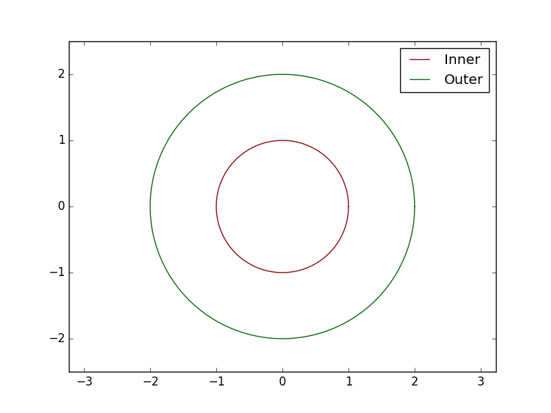
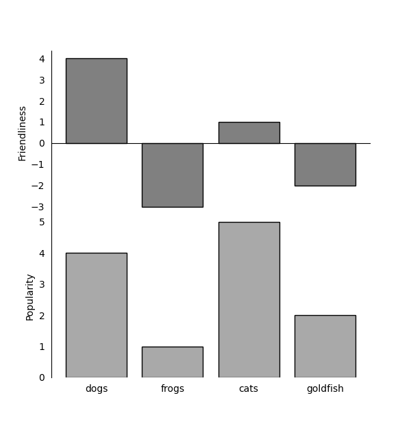

This week, I continued with the work from the previous week. Last week, I read and experimented with
Matplotlib and different options to add more detail to my plots, such as colours and line styles. This
week, I focused on aspects like ticks, tick labels, limits, layouts, and legends, particularly what
happens around the edges of the axes.
I received another document with information on what I should do this week. It started by discussing how
Matplotlib will automatically insert margins in the graphs. I found this a problem in the past when I
saw that my plots did not fully take notice of it, as I thought it was just the way it was. The document
told me further that I could change the margin of the graphs; this is done with a simple.
Python
ax1.margins(x=0.0, y=0.1) # 10% padding in the y-direction only
ax2.margins(0.05) # 5% padding in all directions
The document contained numerous examples of what can be done with Matplotlib, including the one mentioned
earlier. It presented information and then challenged me to put the concepts into practice, which I
found to be an effective way to reinforce the ideas in my mind. In total, the document had two
Exercises: 4.1 and 4.2.
Exercise 4.1
The exercise asks me to reproduce a specific figure using Matplotlib by plotting two circles. I need to
use the provided data and combine the ax.axis and ax.margins methods to scale the axes
appropriately. The goal is to plot the circles with equal scaling and add a legend to label them. This
exercise helps me practice setting axis limits, adding padding, and creating legends in Matplotlib.
Below is the result of my answer and the code I wrote to create it.

Python
import numpy as np
import matplotlib.pyplot as plt
plt.style.use('classic')
t = np.linspace(0, 2 * np.pi, 150)
x1, y1 = np.cos(t), np.sin(t)
x2, y2 = 2 * x1, 2 * y1
colors = ['darkred', 'darkgreen']
fig, ax = plt.subplots()
ax.plot(x1, y1, color=colors[0], label='Inner')
ax.plot(x2, y2, color=colors[1], label='Outer')
# Set the aspect of the plot to be equal
ax.axis('equal')
# Set the limits of the plot
ax.axis([-2.5, 2.5, -2.5, 2.5])
# Add margins
ax.margins(0.1)
# Add a legend
ax.legend(loc='upper right')
plt.show()
Exercise 4.2
The exercise asks me to reproduce a specific figure using Matplotlib by dealing with the boundaries,
layout, ticks, and spines. I need to use the provided data and hints to create two subplots with no
vertical space between them, set the bottom spine at 0 in data coordinates, and remove the tick lines
from the right and top sides. To avoid repetitive code, I should consider writing a function that takes
an axis object and makes the necessary spine changes. This exercise helps me practice configuring the
layout and appearance of plots in matplotlib.

Python
import matplotlib.pyplot as plt
import numpy as np
# Data
data = [('dogs', 4, 4), ('frogs', -3, 1), ('cats', 1, 5), ('goldfish', -2, 2)]
animals, friendliness, popularity = zip(*data)
# Function to customize the axes
def customize_axes(ax, y_zero=False):
ax.spines['top'].set_visible(False)
ax.spines['right'].set_visible(False)
if y_zero:
ax.spines['bottom'].set_position('zero')
else:
ax.spines['bottom'].set_visible(False)
ax.xaxis.set_ticks_position('none')
ax.yaxis.set_ticks_position('none')
# Create subplots
fig, (ax1, ax2) = plt.subplots(2, 1, sharex=True, figsize=(6, 8))
fig.subplots_adjust(hspace=0)
# Plot data with black edges
ax1.bar(animals, friendliness, color='gray', edgecolor='black')
ax2.bar(animals, popularity, color='darkgray', edgecolor='black')
# Customize axes
customize_axes(ax1, y_zero=True)
customize_axes(ax2)
# Set labels
ax1.set_ylabel('Friendliness')
ax2.set_ylabel('Popularity')
# Remove ticks from the right and top sides
ax1.tick_params(right=False, top=False)
ax2.tick_params(right=False, top=False)
plt.show()
What were you most proud of?
I was most proud of completing Exercise 4.2, which involved more complex customisation of plots. Writing
a function to handle repetitive tasks and achieve the desired layout and appearance was particularly
satisfying.
If you could do this week over, what would you do differently?
If I could do this week over, I would spend more time experimenting with different configurations and
styles to explore the full range of customisation options available in Matplotlib.
Did this week’s activities help you learn more than others we’ve done?
Yes, this week’s activities were particularly helpful because they focused on practical aspects of
plotting that I had struggled with before, such as adjusting margins and configuring ticks and spines.